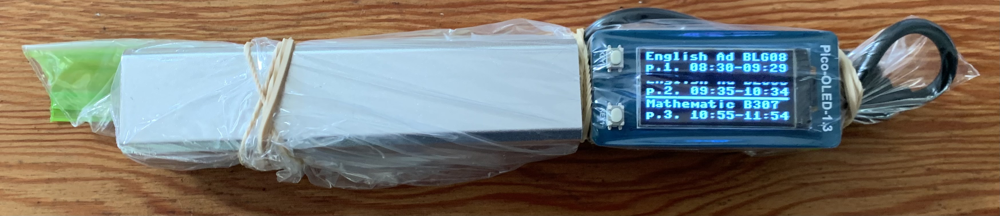
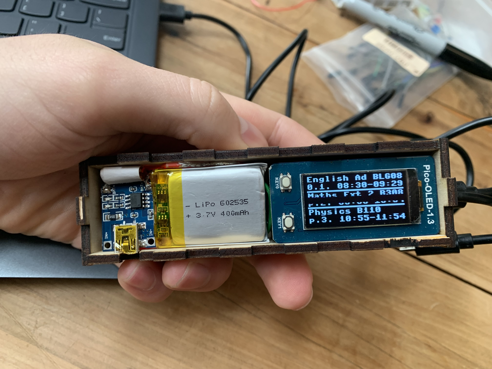
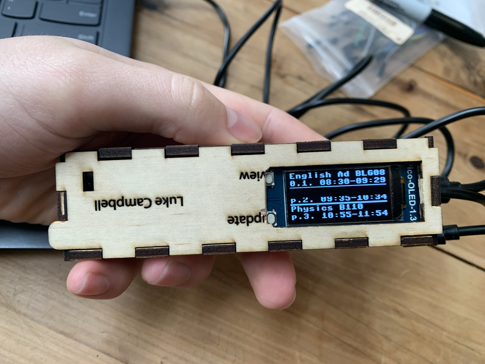

When I was in school I was in the habit of using my phone to access my timetable. The frequent room and time changes made paper timetables obsolete.
As such when my school introduced new rules banning phone use within the building, I needed to come up with a new solution.
To fix my problem I built a portable electronic timetable. It could access my updated timetable from the internet, and display it on a small OLED screen, but was small enough to fit easily in my pocket. This served me well as the school had no issue with me using it, and I could always have the most updated version of my timetable.
To start off with I built a bot that could log onto the school's timetable service - Edumate, and scrape all of my timetable data for me. This took some experimentation but eventually I succeeded using Selenium and some slow painstaking experimentation.
I already knew I couldn't run this on a microcontroller, or at least not well, so the next step was to design an API which would be hosted online and do the heavy-duty scraping. This API was simple and robust. When it recieved request sent with the correct code it would scrape my timetable and send the day's classes back.
My first prototype was very simple. To reduce wiring I used a Raspberry Pi Pico and an OLED shield with two inbuilt buttons. This was powered by a 5V power bank via the Pico's micro-usb port. The entire assembly was kept within a ziplock bag for protection.
This prototype worked for a few weeks, but was soon discarded after I built a more permanent prototype: version 2. The second version used the same microcontroller and OLED shield, but had a small rechargable LiPo battery (with corresponding chargin module and 5V supply module) built into the case. This not only saved a lot of space but saved me from dissassembling the device when I wanted to recharge the power bank.
I laser-cut a case for it which provided more protection than the zip-lock bag and and kept it all within a small box.
